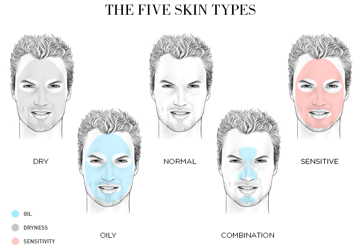

SKIN TYPES

Đầu tiên hãy nói cơ sở để phân loại da. Người ta dựa vào 3 yếu tố sau :
Lượng nước : ảnh hưởng đến sự thoải mái & độ đàn hồi của da
Lượng dầu : ảnh hưởng đến độ mềm (softness) của da
Độ nhạy cảm : khả năng bị kích ứng da
Có 5 loại da chính :
Da thường (Normal Skin)
Da hỗn hợp (Combination Skin)
Da khô (Dry Skin)
Da dầu (Oily Skin)
Da nhạy cảm (Sensitive Skin)
Khi đi mua mỹ phẩm, bạn sẽ thấy nhà sản xuất luôn đề rõ sản phẩm đó dành cho loại gì. Hãy đọc kĩ trước khi mua để tránh trường hợp dùng không được. Tất nhiên các bạn có thể linh động kết hợp nhiều sản phẩm với nhau nhưng sự kết hợp cũng phải có cơ sở. Bây giờ, mình sẽ đi chi tiết vào đặc điểm loại da để các bạn dễ nhận dạng nhé!
1/DA THƯỜNG
Là loại da không quá khô, cũng không quá dầu Tỉ lệ dầu - nước trên da cân bằngRất ít hoặc không có khuyết điểm
Không nhạy cảm nghiêm trọng
Lỗ chân lông hầu như không thể nhìn rõ
Tổng thể làn da rạng rỡ, mịn màng
=> Ai may mắn sở hữu sẵn làn da thường thì chỉ cần chăm sóc đầy đủ bước với các sản phẩm dành riêng cho Normal Skin là đủ rồi. Còn khi tuổi tác tăng dần, có thể hệ cân bằng sẽ tự bị phá vỡ, khi ấy bổ sung thêm các dưỡng chất chống lão hóa (tầm 25 tuổi trở ra) thì sẽ duy trì được vẻ đẹp của da lâu hơn.
2/DA HỖN HỢP
Là loại da có sự thay đổi tính chất theo vùng, ví dụ như có vùng khô, vùng dầu, vùng bình thườngLà loại da phổ biến của người Việt Nam
Có 2 loại da hỗn hợp chính là hỗn hợp thiên dầu (diện tích vùng da bị dầu lớn hơn những vùng còn lại, nhất là có nhiều dầu ở vùng chữ T và 2 bên má trong) và hỗn hợp thiên khô (diện tích vùng da khô lớn hơn những vùng còn lại, thường chỉ có dầu ở vùng chữ T, 2 bên má trong và ngoài đều khô)
Lỗ chân lông giãn nở khá to (nhất là vùng có dầu)
Có mụn đầu đen (ở mũi, cằm)
Bề mặt da bóng một số vùng
=> Phần lớn mọi người đều sở hữu làn da hỗn hợp, theo mình cách chăm sóc da hỗn hợp là sử dụng mix các sản phẩm cho da dầu, da khô với nhau. Ví dụ như vùng da nào dầu thì dùng kem dưỡng cấp nước, vùng da nào khô cùng kem dưỡng cấp ẩm, chứ không nhất thiết chỉ dùng 1 loại kem dưỡng cho cả mặt. Còn với các vấn đề cần đặc trị như LCL, mụn đầu đen thì sẽ dùng riêng các sản phẩm đặc trị.
3/DA KHÔ
Là loại da có bề mặt thô ráp, không mịn màngĐộ đàn hồi của da kém
Thiếu cả dầu lẫn nước trên da
Có các mảng đỏ trên bề mặt da
Lỗ chân lông khá mờ
Nhìn rõ các nếp trên da
Rất dễ bị lão hóa sớm
=> Ở Việt Nam mình nghĩ ít người có làn da khô bẩm sinh mà thường chỉ là khô theo mùa do độ ẩm không khí quá thấp. Vậy nên mình nghĩ cách chăm sóc đơn giản nhất cho da khô chính là dùng các sản phẩm cấp ẩm thật tốt, vừa cấp nước vừa cấp dầu cho da, giúp da được mềm mịn. Ngoải ra người da khô cũng nên thường xuyên đắp mặt nạ thiên nhiên (mình gợi ý dùng mật ong rừng nguyên chất, nói chung là không pha tạp chất) đắp 3 lần/tuần, da sẽ được cải thiên rất nhiều về độ ẩm cũng nhự độ đàn hồi.
4/DA DẦU
Là loại da có bề mặt thường xuyên bóng nhờn Da thiếu nước (nên dầu tiết ra nhiều hơn) Lỗ chân lông giãn nở rộng Thường bị xỉn màu (dull) Da dày Có mụn đầu đen, các loại mụn & khuyết điểm khác Tốc độ lão hóa chậm nhất => Đây là một loại da khó chiều, rất dễ bám bẩn vì thế nếu không chăm sóc kĩ càng sẽ rất dễ viêm nhiễm và lên mụn.5/DA NHẠY CẢM
Bề mặt da mỏng đến rất mỏngDễ bị kích ứng
Có nhiều nốt đỏ chìm dưới da
Ngứa
Rát
Khô
=> Da nhạy cảm là một loại da riêng, thường hơi khô. Tất nhiên nếu sở hữu làn da này thì sẽ khá khó để chọn mỹ phẩm ưng ý. Lời khuyên của mình là dùng các dòng sản phẩm dành riêng cho da nhạy cảm (các hãng mỹ phẩm lớn đều sản xuất riêng 1 dòng cho loại da này) hoặc dùng mỹ phẩm hữu cơ, handmade. Nếu gặp vấn đề nghiêm trọng hãy đến gặp bác sĩ da liễu để được tư vấn chính xác hơn. Dù là loại da gì thì cũng cần chăm sóc đủ bước thì mới.
Trên đây là 5 loại da chính và đặc điểm nhận biết. Mình hy vọng bài viết này có ích cho các bạn trong việc xác định được chính xác loại da của mình để từ đó định hướng được các sản phẩm chăm sóc phù hợp.